Keith Jenkins
GIS Librarian
Cornell University
A brief history of CUGIR
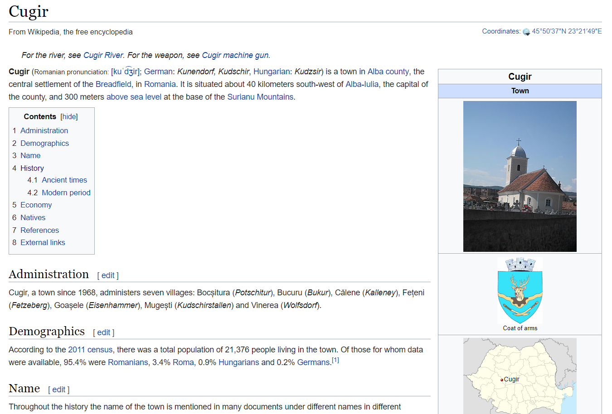
Back in 1996...
Census TIGER/Line data on CD-ROM
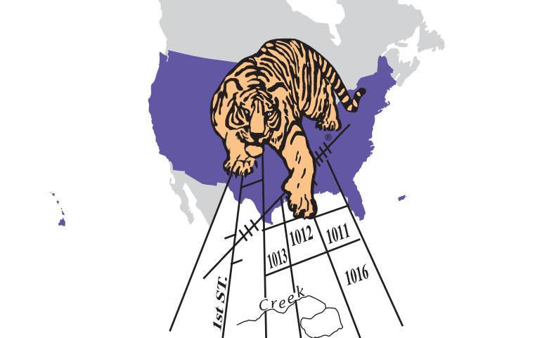
Topologically
Integrated
Geographic
Encoding and
Referencing
Cornell
University
Geospatial
Information
Repository
CUGIR 1.0 1998
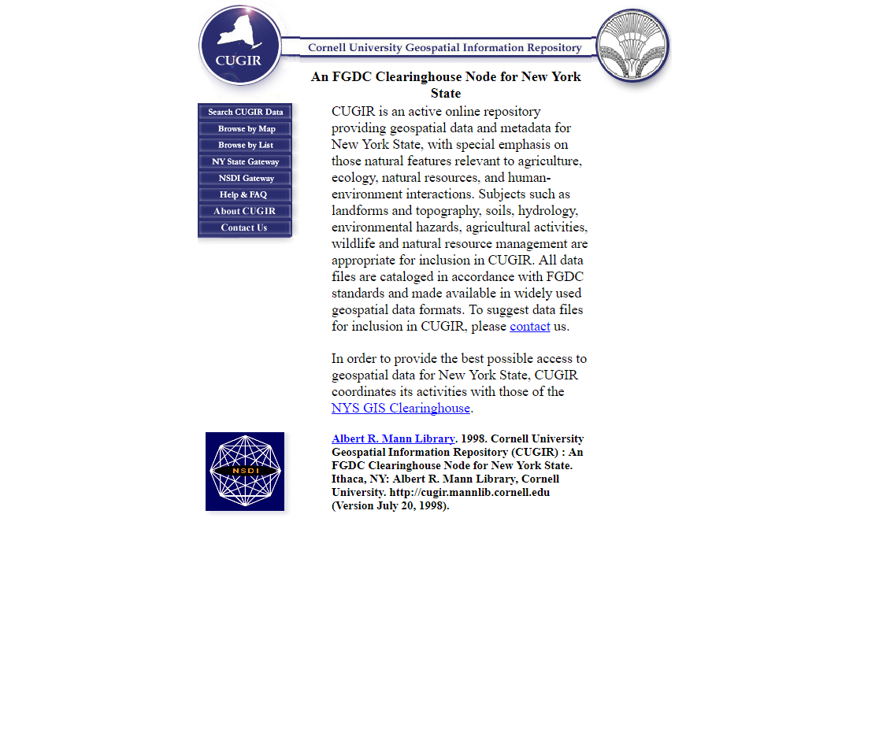
CUGIR 2.0 2006
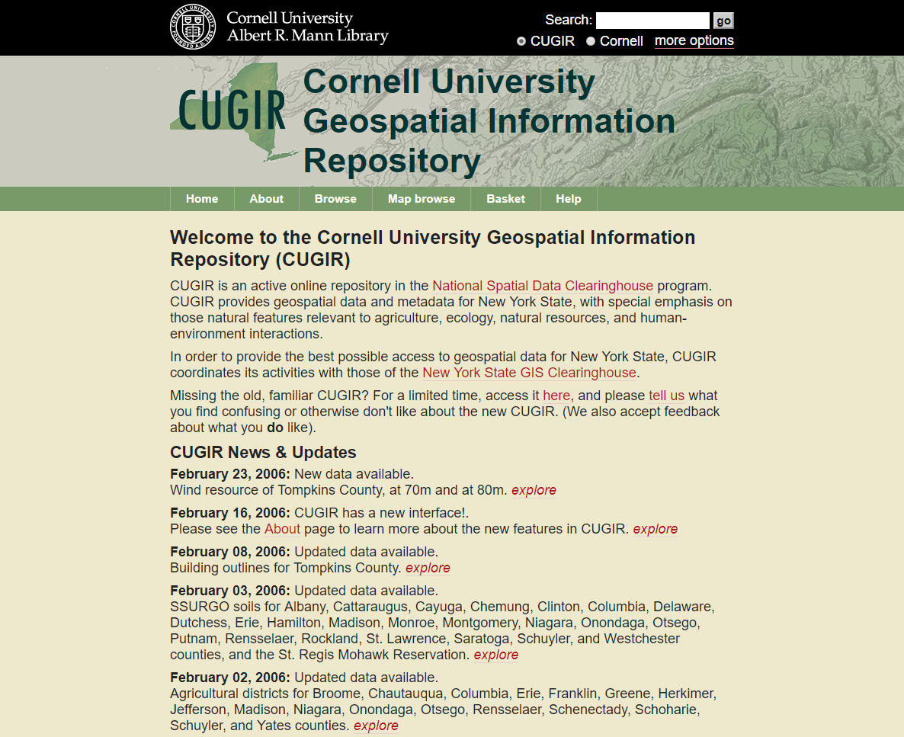
CUGIR 3.0 2017
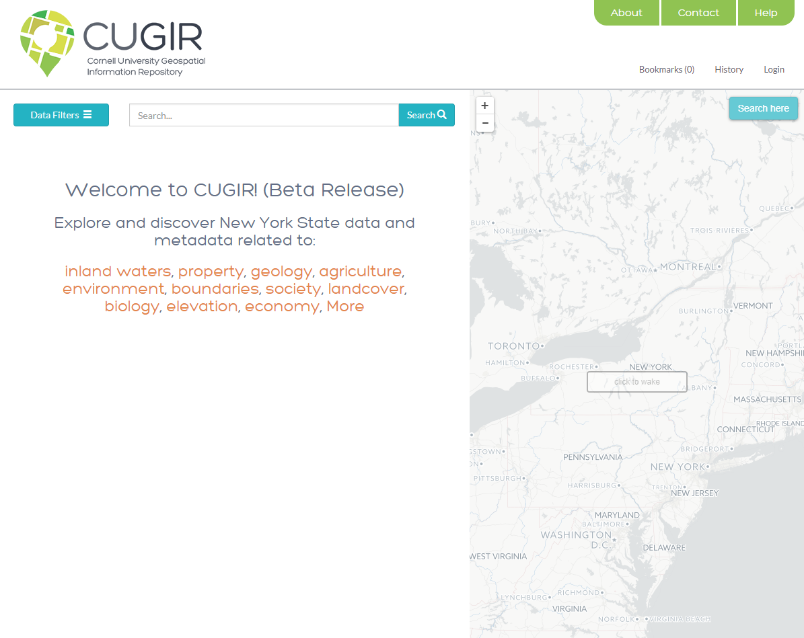
Why did we make a new CUGIR?
in other words...
What was wrong with the old site?
.zip files within zipfiles
.gz files within zipfiles
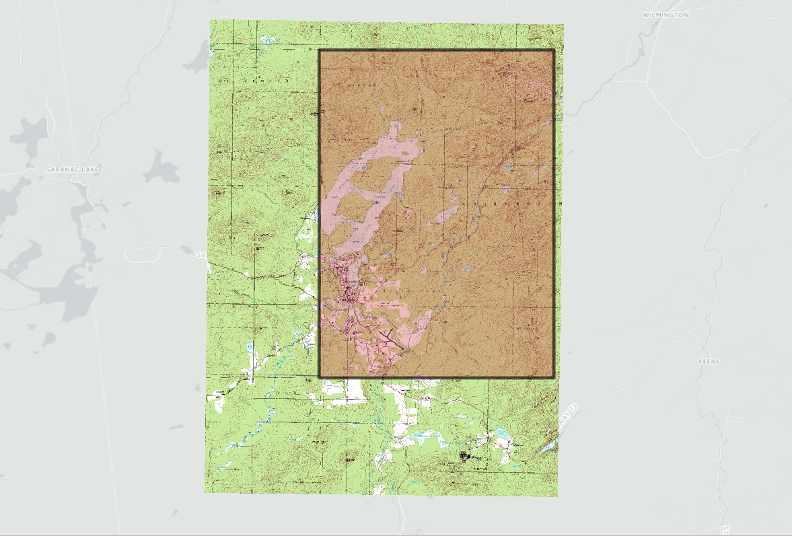USGS topographic maps (.tar.gz within a .zip, which extracted to a dozen small .tif files, which were a set of all the 5000-meter square tiles that overlapped the quad of the topo map the user had selected)
e-mails
How do I open a shapefile?
How do I open an .e00 file?
difficult to add new datasets
How did we make the new CUGIR?
Used high-quality open-source components...
PostGIS (spatial database)
GeoServer (web services)
Solr (search index)
GeoBlacklight (front-end interface)
Some assembly required
Data migration
Metadata review and enhancement
Python-based data ingest pipeline
Local GeoBlacklight customizations
Wow, that sounds like a lot of work!
Yes, it was!
But we had a great team that made it happen.
Who is this amazing CUGIR Team?
- Darcy Branchini Senior UX Designer
- Keith Jenkins GIS Librarian
- Huda Khan Applications Programmer
- Kevin Kidwell UX Designer
- Alan McCarty DevOps Engineer
- Jeff Piestrak Digital Collections Specialist
What's so great about the new CUGIR?
WFS(web feature services)
QGIS - Add WFS Layer
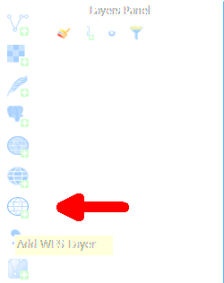
Connect to CUGIR WFS
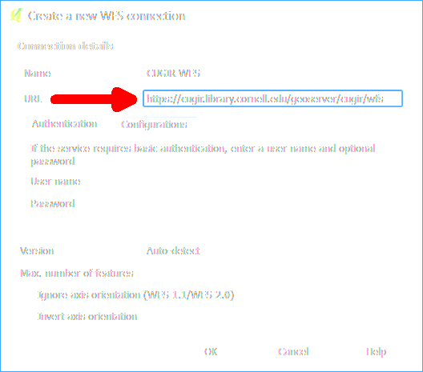
Select layer from CUGIR
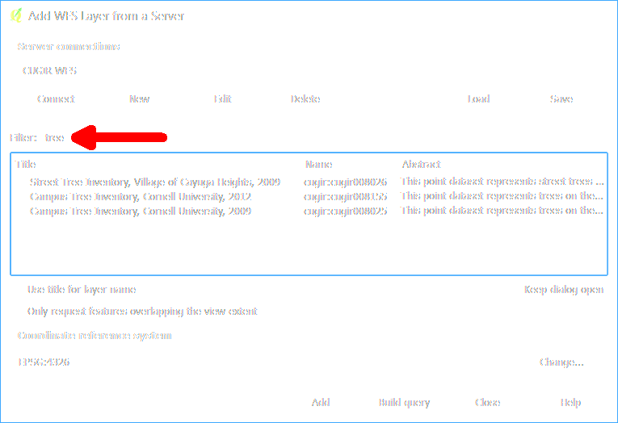
Style and interact with WFS data
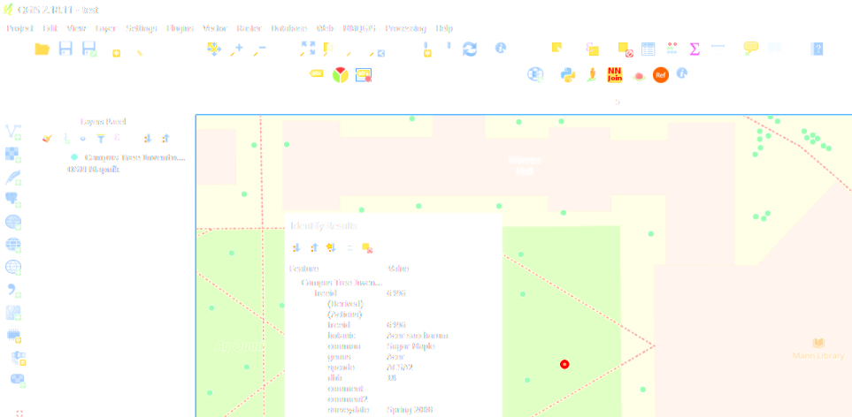
Filter WFS data with a query
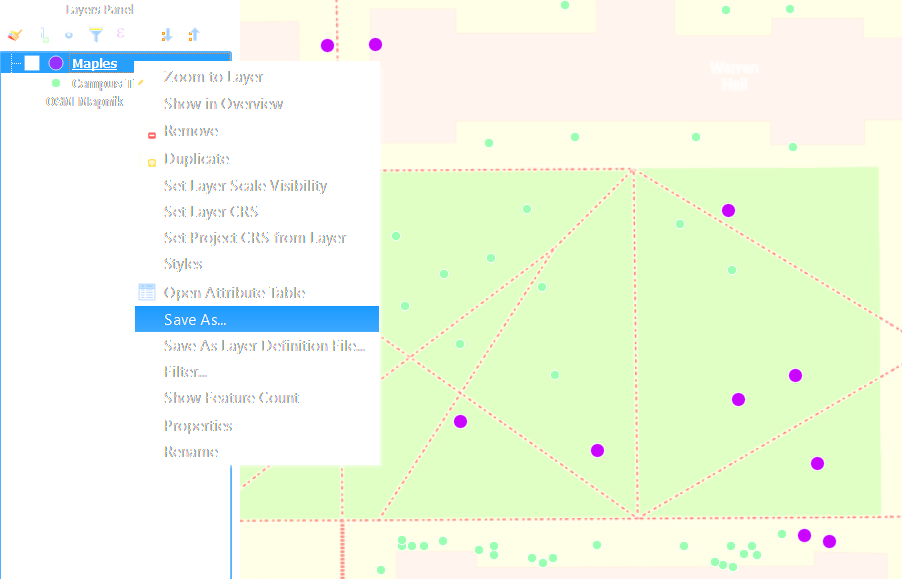
WFS = Way Faster than searching a website and downloading and unzipping a Shapefile
fast downloads (files stored on Amazon S3)
we plan to add much more data...
newer updates of existing datasets
while archiving older versions
expand beyond NY (Cornell research worldwide)
but still focus on New York
New CUGIR website just launched October 3
But the old site is still available for now...
What's wrong with the new site?
it's not the same as the old site
some external sites point to CUGIR datasets
redirect old URLs
finish migrating data
.e00 files
improve sort order of search results
cross-reference datasets
constantly improve the user experience
cugir.library.cornell.edu